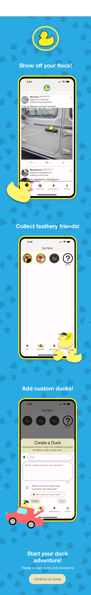
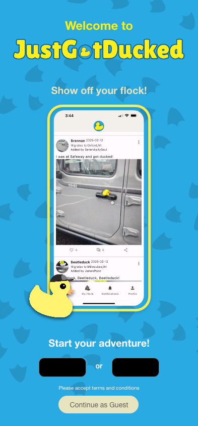
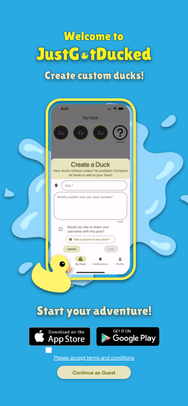
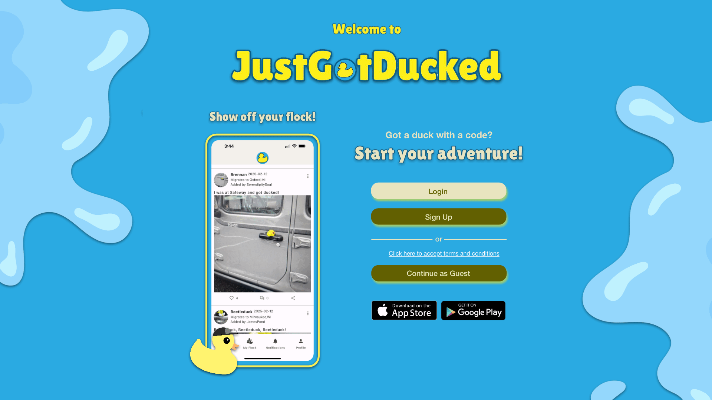

Adobe XD is a software application used for UI/UX design and prototyping, particularly for web and mobile applications. It allows users to design interactive prototypes, wireframes, and user interfaces without needing to code. The program is very similar to Figma! In fact, Adobe recently purchased Figma and will no longer support the Adobe XD software for download or updates.
Nevertheless, Adobe XD is a great program for getting started with prototyping and wireframing!
I worked extensively with Adobe XD throughout my internship with AAA as an IT Innovation intern. I created web and mobile prototypes, as well as fully wireframing these prototypes, making them look as realisitic as possible.
While I had been exposed to Adobe XD some beforehand in school, the animations and wireframing skills I developed during my time with AAA has leveled up my prototyping abilities!

One of the larger projects I worked on during my time with AAA in Adobe XD was completing a redesign of the landing page for their application, JustGotDucked. The main purpose of the redesign was to provide more information to a guest visiting the app or website for the first time, and try to do this in a fun way that intrigues the user! I created web and mobile views for this redesign.
The greatest challenge in this redesign was trying to include all the information in a concise enough manner so that the screen was not overwhelming for the user, but also still touched all the points we wanted to cover in one space!
The first iteration of the redesign showed 3 different possible screens a user may see in the application, and required the user to scroll through this "story" to then find the continue as guest button and other login information.
A worry that arose with this design was that the user would not want to scroll down, or may get confused by the app before ever getting the opportunity to continue as a guest or login. We decided to get rid of the scroll view for future iterations and substitute the scroll with a gif that displayed the different screens & prompts over time in one space.

The second iteration was much closer to our final product, but now we were worried that the screen may be too busy. Ultimately we decided to remove the asset in the background of footprints to give the application a cleaner feel, then we implemented a different asset for the web view where more space was allotted helping reduce the cluttered feel.

Final prototype for mobile view! We felt that the clean background made the UI/UX more appealing and less overwhelming for the user. We hope to implement an animation with a splash asset seen in the web view that would "wash" over the screen when a user logs in and the page navigates to the feed.

Final prototype for web view! As you can see we wanted to reimplement some fun assets since there is more real estate available in web view. We also hope to implement animations that cause the splashes to move inwards as the page transitions when a user logs in and the page navigates to the feed!